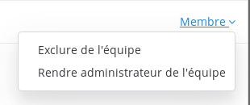

Gestion des membres #
Inviter des membres dans une équipe #
Il y a deux méthodes pour inviter de nouveaux membres après la création d’une équipe : envoyer des invitations directes et partager le lien d’invitation de l’équipe.
Invitations directes #
Les invitations directes sont des courriels d’invitations envoyés depuis Framateam directement à l’adresse courriel des membres invités. Un lien dans le courriel d’invitation amène l’utilisateur·trice vers la page de création de compte.
À partir du Menu principal (l’icône ) :
- sélectionnez Envoyer une invitation
- saisissez l’adresse de courriel du nouveau membre, ainsi que son nom et prénom
- optionnel : cliquez sur Ajouter un autre pour envoyer d’autres invitations directes depuis la même fenêtre.
- cliquez sur Ajouter une invitation pour envoyer le mail
Lien d’invitation dans une équipe #
Le lien d’invitation dans une équipe est une URL unique qui emmène l’utilisateur·trice sur une page de création de compte pour votre équipe. Votre lien d’invitation peut être utilisé par autant d’utilisateur·trice·s que souhaité, et il ne change pas, à moins d’être régénéré par un·e administrateur·trice d’équipe ou un·e administrateur·trice système, via > Paramètres d’équipe > Général > Code d’invitation.
Par exemple, le lien d’invitation peut être inclus dans un courriel à destination de tous les employés d’une entreprise, pour tous les inviter dans une équipe Framateam.
À partir du Menu principal (l’icône ), sélectionnez inviter des utilisateurs. Copiez le lien et partagez-le avec les utilisateur·trice·s que vous souhaitez inviter dans l’équipe.
Ajouter des membres #
Si les personnes que vous souhaitez ajouter à votre équipe ont déjà un compte Framateam, vous pouvez directement les ajouter à votre équipe en :
- cliquant sur l’icône
- cliquant sur inviter des utilisateurs
- tapant son identifiant ou l’adresse mail
- cliquant sur l’identifiant de l’utilisateur·trice dans la liste
- cliquant sur le bouton Inviter des membres
Vous pouvez sélectionner plusieurs membres avant de cliquer sur Ajouter.
Exclure des membres #
Si vous souhaitez exclure un membre d’une équipe, vous devez :
- cliquer sur l’icône
- cliquer sur Gérer les membres
- cliquer sur membre en face du pseudo à exclure
- cliquer sur Exclure de l’équipe

Rôles utilisateur·trice #
Il y a quatre types d’utilisateur·trice·s avec des niveaux de permissions différents dans Mattermost : les administrateur·trice·s système, les administrateur·trice·s de groupe, les membres et les comptes inactifs. On peut attribuer ces rôles depuis le sous-menu Gérer les membres du menu principal.
Membre #
C’est le statut par défaut donné aux derniers utilisateur·trice·s à avoir rejoint le système. Les membres ont les permissions basiques pour utiliser le site d’équipe Mattermost.
Inactif #
Ce statut est donné aux utilisateur·trice·s dont les comptes sont marqués comme étant inactifs. Ces utilisateur·trice·s ne peuvent plus s’identifier sur le système.
Puisque Mattermost est conçu comme un système d’enregistrement, il n’y pas d’option pour supprimer des utilisateur·trice·s du système Mattermost, car une telle opération pourrait compromettre l’intégralité des messages archivés.
Administrateur·trice système #
Sur Discuter, ce rôle est celui d'Herminien.
L’administrateur·trice système est en général membre de l’équipe technique et dispose des droits suivants :
-
accès à la console système depuis le menu principal de tous les sites d’équipe,
-
changement de tout réglage du serveur Mattermost disponible depuis la console système,
-
permission à d’autres utilisateur·trice·s d’être ou de ne plus être administrateur·trice système,
-
tous les droits d’administrateur·trice de l’équipe tels que décrits plus bas.
Le premier usager ajouté à un système Mattermost fraîchement installé est assigné au rôle d’administrateur·trice système.
Administrateur·trice de l’équipe #
L’administrateur·trice de l’équipe est généralement un usager non technicien et dispose des droits suivants :
- accès au menu « Configuration de l’équipe » du menu principal du site de l’équipe,
- possibilité de changer le nom d’équipe et d’importer des données depuis des fichiers d’export Slack,
- accès au menu « Gérer les membres » et à la possibilité de modifier le statut des usagers à Administrateur·trice (de l’équipe), membre et inactif.
Pour ajouter un administrateur·trice à une équipe, il faut être soit même administrateur·trice puis :
- cliquer sur l’icône
- cliquer sur Gérer les membres
- cliquer sur membre en face du pseudo
- cliquer sur Définir en tant qu’administrateur d’équipe